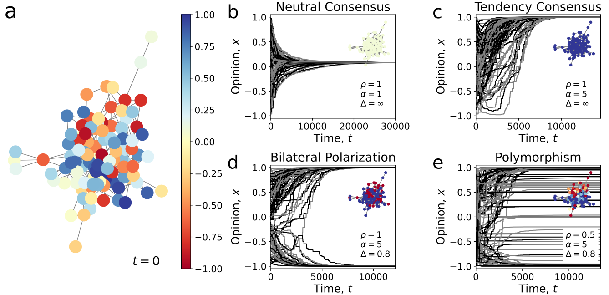

Qinghua Wang |
Here is Qinghua Wang. I am currently a third-year master's student majoring in Data Science at the School of Mathematics, Shandong University. I am actively involved in research with the Intelligent Justice Big Data Group, advised by Dr. Cunquan Qu. My research interests lie in Computational Sociology and Natural Language Processing.
I’m actively seeking a PhD position starting in Fall 2026!
|
Incorporating Legal Logic into Deep Learning: An Intelligent Approach to Probation Prediction.
Qinghua Wang, Xu Zhang, Lingyan Yang, Rui Shao, Bonan Wang, Fang Wang, and Cunquan Qu International Joint Conference on Artificial Intelligence (IJCAI), 2025 |
|
Explainable Multidefendant Legal Judgment Prediction Enhanced by Judicial Logic Based on Large Language Models.
Xu Zhang, Qinghua Wang, Mengyang Zhao, Fang Wang, and Cunquan Qu The Transactions on Knowledge and Data Engineering (TKDE), Major Reversion |
|
|

Modeling and Controlling Polymorphic Opinion Dynamics in Social Networks with Heterogeneous Sensitivities.
Xu Zhang, Qinghua Wang, Fanpeng Song, Fang Wang, and Cunquan Qu IEEE Transactions on Network Science and Engineering (TNSE), Under Review |
{kind=link}